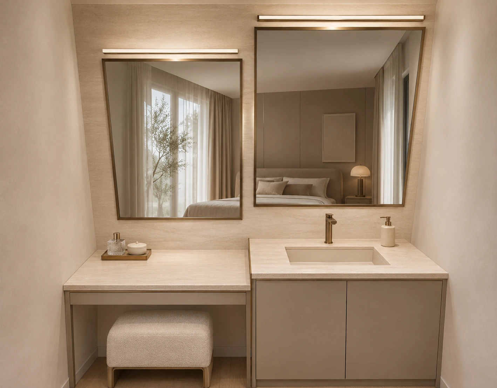
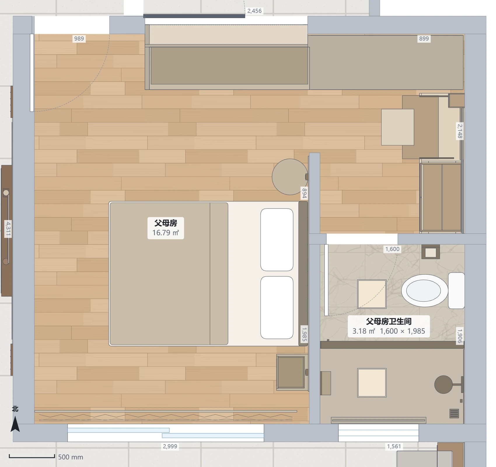
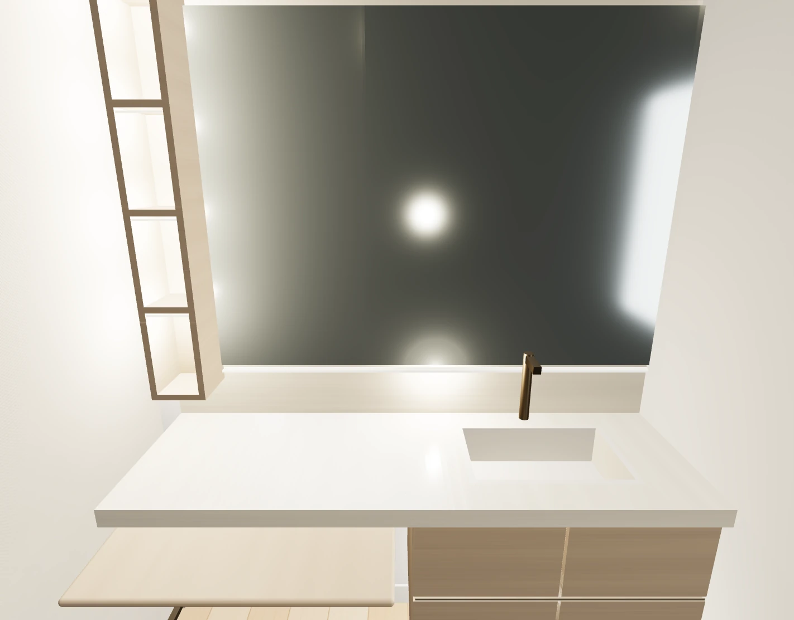

现在 · 按两张参考融合后的效果
AI氛围图。第一张参考的整面镜、通长石台与悬空木抽屉；第二张参考的浅石纹理和自然木色。局部纹理与镜中反射为近似。

调整前 · 两只独立镜框与高低台面
这是你刚才看到的旧效果。本轮已经撤换旧造型，不再作为父母房当前方案。

当前父母房平面 · 已写入可编辑模型
梳妆与洗漱仍集中东侧，北侧原梳妆位补齐的到顶衣柜保留。床位、门窗和花园65版操作台不变。

实际模型 · 整面镜与一体柜
1550mm通长主台面统一高820mm，左侧700mm宽梳妆板高750mm，当前展示拉出190mm的使用状态；镜宽1390mm，北端160mm灯光开放格。

这次确实改了什么
① 一整面无框镜，替代两只厚框镜。② 主石台整排齐平820mm，左侧梳妆板750mm。③ 右侧木抽屉悬空，左侧保留腿部空间。④ 补入镜下、柜下暖光与北端木格。⑤ 北侧到顶衣柜保留。
两条真实灯带已加入模型灯光对象，另有开放格发光意向。模型自查没有新增告警，保存重新打开数据一致；花园65版及其他房间家具逐项保持。